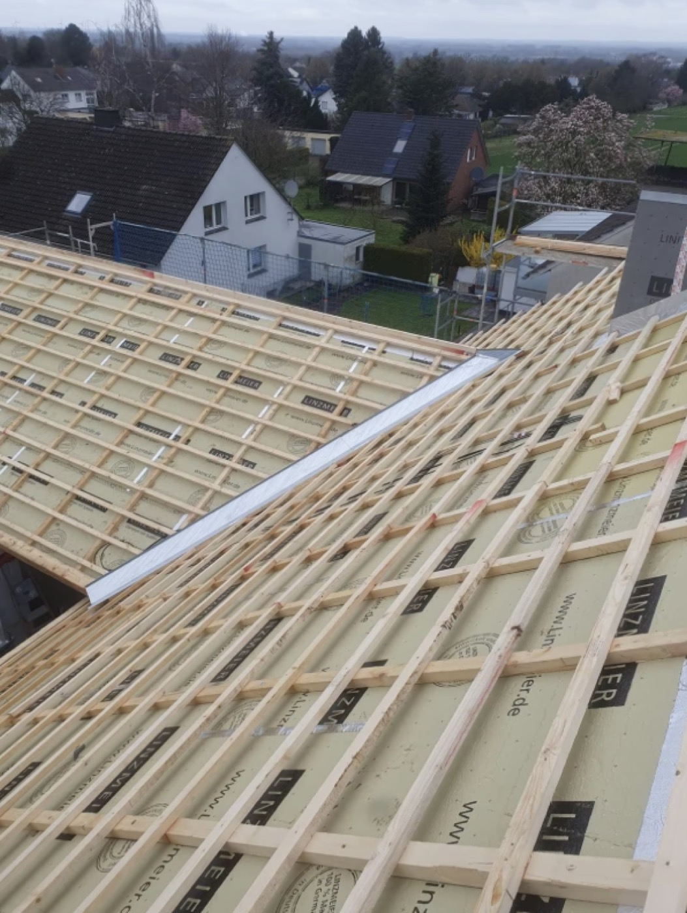
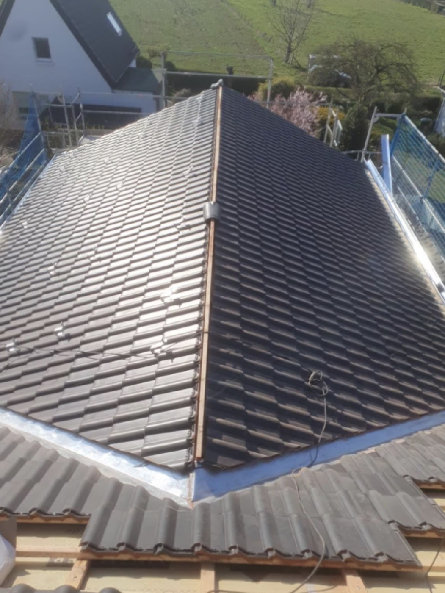
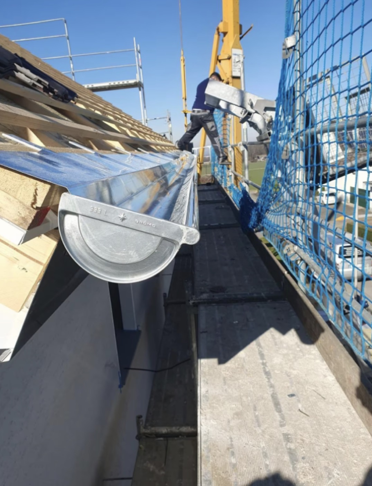
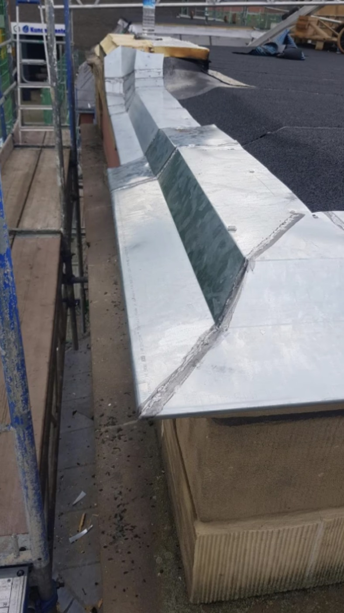

Was bei normalen Anzeigen haeufig passiert
- Zu viel Text, zu wenig visuelles Vertrauen
- Leistungen bleiben fuer neue Interessenten zu allgemein
- Der naechste Schritt ist nicht klar genug
- Anfragen gehen an klarer aufgebaute Wettbewerber
Dachdecker Reparatur & Sanierung | Reparatur, Isolierung, Reinigung & Bedachung
Jetzt Nachricht sendenDachdecker Reparatur & Sanierung | Lokaler Dachdeckerbetrieb
Diese Vorschau zeigt einen Dachdecker-Auftritt, der Reparaturen, Isolierung, Reinigung, Bedachungen, Rinnen, Dachfenster und Schweißbahn klar erklärt und mit echten Baustellenbildern direkt Vertrauen aufbaut.
Wer online klarer wirkt und echte Arbeiten zeigt, bekommt eher Vertrauen und damit eher die Anfrage.
Jetzt Nachricht sendenWarum diese Struktur funktioniert
Diese Schnell-Demo ist genau fuer solche Faelle gebaut: echte Bilder, saubere Struktur, direkter Kontakt.
Leistungen
Kurz, verstaendlich und so aufgebaut, dass Besucher direkt sehen, ob das Angebot zu ihrem Problem passt.
Sauber erklaert, damit Besucher sofort verstehen, dass diese Leistung angeboten wird und direkt anfragen koennen.
Sauber erklaert, damit Besucher sofort verstehen, dass diese Leistung angeboten wird und direkt anfragen koennen.
Sauber erklaert, damit Besucher sofort verstehen, dass diese Leistung angeboten wird und direkt anfragen koennen.
Sauber erklaert, damit Besucher sofort verstehen, dass diese Leistung angeboten wird und direkt anfragen koennen.
Sauber erklaert, damit Besucher sofort verstehen, dass diese Leistung angeboten wird und direkt anfragen koennen.
Sauber erklaert, damit Besucher sofort verstehen, dass diese Leistung angeboten wird und direkt anfragen koennen.
Sauber erklaert, damit Besucher sofort verstehen, dass diese Leistung angeboten wird und direkt anfragen koennen.
Sauber erklaert, damit Besucher sofort verstehen, dass diese Leistung angeboten wird und direkt anfragen koennen.
Echte Arbeiten
Darum ist diese Schnell-Demo auf echte Referenzbilder ausgelegt, nicht nur auf leere Versprechen.




Bilder, Leistungen und Kontakt arbeiten zusammen statt gegeneinander.
Naechster Schritt
Warum wir
Genau deshalb ist diese Struktur bewusst direkt, bildstark und auf den naechsten Schritt fokussiert.
Nicht Agentur-Blabla, sondern eine Seite, die fuer neue Interessenten in wenigen Sekunden Sinn ergibt.
Echte Arbeiten schlagen generische Behauptungen fast immer.
Leistungen muessen nicht studiert, sondern in Sekunden verstanden werden.
Je leichter die erste Nachricht, desto eher meldet sich der Interessent.
Ein sauberer digitaler Auftritt macht aus einer Anzeige einen ernst zu nehmenden Betrieb.
Kontakt
Diese Schnell-Demo ist erstmal auf Nachricht-Kontakt ausgelegt. Telefonnummer oder WhatsApp koennen spaeter direkt rein.
Wenn spaeter Telefonnummer, WhatsApp oder echte Firmendaten kommen, ist die Seite in Minuten nachschaerfbar.